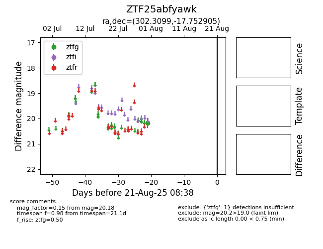

Target ZTF25abfyawk at 2025-08-21 08:38, see:
FINK: fink-portal.org/ZTF25abfyawk
Lasair: lasair-ztf.lsst.ac.uk/objects/ZTF25abfyawk
ALeRCE: alerce.online/object/ZTF25abfyawk
alt names
ZTF25abfyawk (ztf,alerce)
coordinates:
equatorial (ra, dec) = (302.3099,-17.75291)
galactic (l, b) = (24.8975,-24.91552)
photometry
last ztfg=20.18
1 ztfg detections
